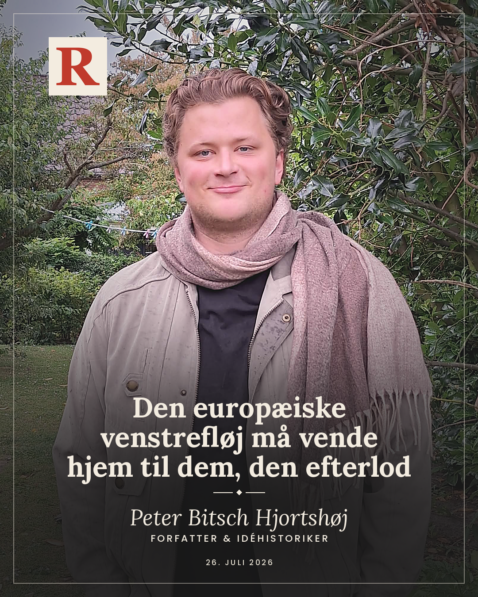

Den europæiske venstrefløj må vende hjem - til den materielle virkelighed og til de mennesker, den efterlod
26.07.2026
I The Road to Somewhere beskriver den britiske journalist og forfatter David Goodhart et Vesten, der i stigende grad har indrettet sig efter dem, han kalder Anywheres: de højtuddannede, mobile mennesker, som kan flytte efter mulighederne, arbejde hvor som helst og skabe deres identitet uafhængigt af et bestemt sted. Det er globaliseringens gyldne børn. Dem, der med begejstring trådte ind i den grænseløse verden og ud af den kravlegård, de blev født ind i. For dem er rødder ikke noget, der skal plejes, men noget, der skal rykkes op og give plads til selvrealisering. De skal ikke formes af tradition, historie eller fællesskab - de skal forme sig selv.
Hos dem bliver patriotisme i Vesten ofte reduceret til noget, der lugter af folkelighed, provinsialisme og fremmedfjendskhed. Man kunne endda hævde, at der i dele af den progressive offentlighed har udviklet sig en dobbeltstandard, hvor patriotisme lettere hyldes, når den findes hos en palæstinensisk kvinde, der kæmper for sit folks land, sprog og kultur, end når den kommer til udtryk hos europæere, der ønsker at værne om deres egen nation. National identitet bliver med andre ord lettere opfattet som legitim, når den udfolder sig langt fra Europa. Når den gør sig gældende i Vesten, bliver den derimod hurtigt mistænkeliggjort, og forsøg på at vælge sit europæiske land eller bare kontinent foran andre kommer til at klinge af kolonialistiske konnotationer eller tarvelig chauvinisme.
Anywheres er børn af den liberale verdensorden, der voksede frem efter Den Kolde Krig. De købte helhjertet fortællingen om åbne grænser, globalisering, multikulturalisme og universelle menneskerettigheder. Problemet er ikke idealerne i sig selv, men at de blev løsrevet fra enhver forståelse af nationen, fællesskabet og de grænser, der gør et samfund til mere end blot et marked eller en samling af tilfældige individer. Hvor den klassiske liberalisme søgte at balancere det nationale med det internationale, grænser med åbenhed og frihed med forpligtelse, udviklede det, man i dag kan kalde den moderne kulturliberalisme, sig gradvist til en ideologi, hvor stadig flere af de fællesskaber, der bandt mennesker sammen, blev gjort til problemer, der skulle overvindes. Familien, nationen, den kulturelle arv og religionen blev ikke længere betragtet som fundamenter, der skulle bevares, men som strukturer, der måtte problematiseres, dekonstrueres og frigøres fra. Det fik ikke kun moralske og ideologiske konsekvenser, men kom også til at præge Europas politiske udvikling og den måde, virkeligheden blev forstået og fremstillet på.
Som Goodhart skriver i et uddybbende essay: ”If politics disappears too far into the individualist abstractions of law and economics it starts to see society as just a random collection of individuals.”
Politik ophører med andre ord med at handle om et folk og bliver reduceret til administration af isolerede individer, rettigheder og markeder. I den forstand rimer Anywheres også på psykologen Rob Hendersons begreb Luxury Beliefs - luksusholdninger på dansk. Henderson beskriver, hvordan status i dag ikke længere alene demonstreres gennem materielt forbrug, men gennem moralske og politiske holdninger. De mest prestigefyldte holdninger er ofte dem, hvis omkostninger bæres af andre. Det er let at hylde grænseløs migration, når man bor i et dyrt storbyskvarter, når konsekvenserne aldrig rammer ens egen hverdag. Det er let at afvise stabile familiestrukturer som gammeldags, når ens egne børn vokser op i ressourcestærke hjem med to engagerede forældre. Det er let at prædike kulturel grænseløshed, når man selv har råd til at vælge de skoler, boligområder og sociale miljøer, hvor konsekvenserne af den samme grænseløshed aldrig for alvor mærkes.
De skal ikke formes af tradition, historie eller fællesskab - de skal forme sig selv.
Ved at gøre holdninger til et spørgsmål om social kapital mistede man gradvist forbindelsen til den virkelighed, man faktisk indgår i. Det er efter min mening en del af forklaringen på, hvorfor venstrefløjen mange steder i Europa er i knæ. Hvorfor Liberal Alliance herhjemme står stærkere blandt arbejdere end Enhedslisten. Og hvorfor højrepopulismen skyller hen over Europa som en flodbølge – eller en syndflod, afhængigt af øjnene, der ser. Den udvikling mener jeg bedst kan forstås gennem den skelnen mellem det materielle og det immaterielle, som flere moderne tænkere har forsøgt at indfange. Den tysk-sydkoreanske filosof Byung-Chul Han er en af dem. Han beskriver, hvordan Vesten har bevæget sig fra en producerende kapitalisme til en digital, salgs- og serviceorienteret kapitalisme og skriver ligefrem: ”Now, immaterial and non-physical forms of production are what determine the course of capitalism.”
Til trods for min store beundring for Byung-Chul Han mener jeg, at hans analyse er interessant netop her, fordi den er så typisk for vores tids både bevidste og ubevidste fejlkalkule i Vesten. For det er ikke kapitalismen, der er blevet immateriel, men vores europæiske bevidsthed om den. Kapitalismen er tværtimod mere materiel end nogensinde. Den hviler fortsat på miner, fabrikker, energi, skibsruter, råstoffer og millioner af mennesker, der udvinder, producerer og bygger. Det, der har forandret sig, er, at denne virkelighed gradvist er forsvundet ud af vores synsfelt og bevidsthed. Vi møder verden gennem skærme, brands, kommunikation og digitale tjenester, mens produktionen er flyttet langt væk - både geografisk og mentalt. Det gælder i særdeleshed Europa, dette verdens måske mest frihandelsforelskede kontinent, der om nogen omfavnede globaliseringens løfter. Et kontinent, hvor vi i årtier har udliciteret vores industrielle kapacitet og taget en uddannelsesdoktrin til os, der lærte os, at fremtiden lå i viden frem for produktion, i kultur frem for industri.
På mange måder er den moderne europæiske venstrefløj blevet den politiske og kulturelle manifestation af denne udvikling. Dens livsverden udspiller sig i stigende grad i kommunikation, analyse, branding og regulering, mens forbindelsen til den materielle virkelighed, som Europas velstand hviler på, er blevet stadig svagere. Dens sociale og kulturelle tyngdepunkt ligger i storbyernes akademiske miljøer, mens dens historiske bånd til den arbejder- og produktionsklasse, den blev sat i verden for at repræsentere, gradvist er blevet brudt. Det er efter min opfattelse venstrefløjens største tragedie i dag. Herhjemme er udviklingen heldigvis delvist blevet bremset af Socialdemokratiet, der som nærmest det eneste større parti på den europæiske centrum-venstrefløj kan argumenteres for at have erkendt denne udvikling i nogenlunde tide. Omfavnelsen af det nationale og kongehuset, en strammere udlændingepolitik og forsøgene på at styrke erhvervsuddannelserne og mindske kløften mellem de faglærte og de akademiske er alle udtryk for den erkendelse – alle områder partiet bør fortsætte med at omfavne og fremme.
Faren er dog langt fra drevet over. Tværtimod. Med den nye firkløverregering risikerer Socialdemokratiet sammen med venstrefløjen endnu en gang at blive trukket tilbage mod et kulturliberalt og venstreorienteret værdipolitisk projekt, hvor de symbolske og identitetspolitiske dagsordener igen kommer til at skygge for den materielle virkelighed. Og det sker på det værst tænkelige tidspunkt, hvor Europa bevæger sig ind i en tid, hvor politik i stigende grad kommer til at handle om fabrikker, forsvarsindustri, energi, produktionskapacitet og strategisk selvstændighed. En tid, hvor konflikterne mellem industriel genopbygning, økonomisk vækst, et stærkere erhvervsliv og stadig mere omfattende regulering og klimapolitiske hensyn kun vil blive skarpere. Hvis venstrefløjen ikke formår at genfinde sit materielle udgangspunkt, risikerer den endnu en gang at stå på sidelinjen, mens virkeligheden efterlader dem bag sig.
Her er det, at den franske filosof, Jean-Claude Michéa bliver interessant. Den franske filosof, der i dag forsøger at råbe venstrefløjen op fra sin franske provins. En mand, der opererer med noget så vidunderligt som venstrefløjskonservative, og vender op og ned på forestillingen om, at den kulturelle venstrefløj står i opposition til den økonomiske liberalisme. Tværtimod. Michéa hævder, at den moderne liberale elite påstår, den bekæmper kapitalismen, mens den i virkeligheden leverer dens vigtigste kulturelle forudsætninger. Som han skriver:
Det er efter min opfattelse venstrefløjens største tragedie i dag.
”Actually existing liberalism rests on the illusion that a meaningful distinction can be drawn between economic liberalism, on the one hand, and political and cultural liberalism, on the other.”
For Michéa hænger markedets logik og den kulturelle frigørelse uløseligt sammen. Kapitalismen har brug for mennesker, der er løsrevet fra traditioner, lokale fællesskaber og nationale loyaliteter. Den trives bedst blandt individer, der først og fremmest forstår sig selv som frie forbrugere, mobile arbejdstagere og autonome identitetsprojekter. Derfor er den kulturelle frigørelse og markedets logik ikke modsætninger, men to sider af samme mønt. Han formulerer det endnu skarpere, når han skriver, at kapitalakkumulation ikke kan fortsætte uforstyrret, hvis den hele tiden skal tage hensyn til religiøs nøjsomhed, stærke familieværdier eller patriotiske idealer. Hårdt sagt kan en højreorienteret økonomi, som han siger, ikke fungere varigt uden en venstreorienteret kultur. Dermed kommer store dele af venstrefløjen paradoksalt nok til at fungere som kapitalismens kulturelle fortrop, der skaber de nye trends, flytter fokus til de nye caféer og hippe rejsedestinationer. Kampen flyttes fra produktion, ejerskab og ressourcer til identitet, selvrealisering og individuel frigørelse. Muligheden for at samles om at forme samfundet afløses gradvist af bestræbelsen på at forme sig selv.
Europæisk reindustrialisering og vejen tilbage til den materielle virkelighed
Skal man skære hele argumentet ind til benet, kan det siges ganske enkelt: Uden et folk, der oplever sig selv som et vi, findes der heller ikke den solidaritet eller politiske vilje, der skal til for at sætte grænser for markedet – eller vigtigere endnu: til aktivt at forme det. I stedet lærer man at tilpasse sig markedets bevægelser frem for at styre dem. Og netop det marked har siden Murens fald drevet årtiers globalisering, udlicitering og afindustrialisering, der gradvist har svækket Europas industrielle styrke og produktionskraft. Det er denne udvikling, store dele af den europæiske venstrefløj ikke formåede at forstå. Mens dens egen virkelighed blev stadig mere akademisk, urban og immateriel, blev dens historiske vælgere efterladt i en verden, hvor fabrikker lukkede, lokalsamfund mistede deres livsnerve, og nationale identiteter blev gjort mistænkelige. Fra franske landmænd over britiske industriarbejdere til danske provinskommuner voksede en erkendelse frem af, at ingen længere talte deres sag. Det tomrum blev højrepopulisternes mulighed.
Men vi er nu nået til et historisk punkt, hvor denne immaterielle verdensforståelse ikke længere blot er utilstrækkelig. Den er ved at blive farlig. Europa bevæger sig ind i en ny virkelighed, hvor geopolitiske konflikter, industriel kapacitet og stormagtsrivalisering igen bliver de kræfter, historien drejer sig om. I en sådan verden bliver det afgørende, om et samfund kan producere sin egen energi, udvikle sin egen teknologi, bygge sine egne fabrikker og forsvare sig selv. Hvis Europa ikke genvinder en stærkere industriel kapacitet, kan vi måske fortsætte lidt endnu med at sole os i forestillingen om den grænseløse verden og den endeløse selvrealisering. Men det bliver andre, der kommer til at definere rammerne for vores virkelighed. Vi lever endnu ikke i en postglobaliseret verden. Det er vi stadig alt for sammenflettede til. Men vi lever heller ikke længere i den verden, der opstod efter Murens fald. Sammenfletningen er ikke længere først og fremmest et globalt ryste-sammen-projekt. Den er blevet en slagmark for stormagter.
Muligheden for at samles om at forme samfundet afløses gradvist af bestræbelsen på at forme sig selv.
Heldigvis er den erkendelse ved at brede sig. Heldigvis fordi en civilisation, der gør grænseløshed til sit ideal, mens resten af verden organiserer sig omkring nationer, produktion og magt, risikerer ikke blot at tabe konkurrencen. Den risikerer at miste evnen til overhovedet at forme sin egen fremtid, og Europa har i alt for lang tid ageret ud fra, hvordan vi ønskede verden så ud, fremfor hvordan egentligt så ud. Det var også den erkendelse, Danmarks faste repræsentant ved EU, Carsten Grønbech Jensen, pegede ind i, da han tidligere i år skrev i Jyllands Posten: ”Vi har været blandt de første til at forsvare fordelene ved den globale frihandel, som har gjort vores samfund rigere. Men vi er nu blandt de få, som endnu praktiserer den.” Mens Europa åbnede sine markeder, opbyggede andre stater deres industrielle kapacitet, teknologiske styrke og geopolitiske indflydelse. I 1970'erne udgjorde eurozonen omkring en fjerdedel af verdens BNP. I dag udgør den omtrent 15 procent, og ifølge Udenrigsministeriets egne fremskrivninger vil den i 2050 være nede omkring 10 procent. Den verdensorden, vi troede skulle cementere Vestens styrke, kom paradoksalt nok til gradvist at udhule den.
Fortsætter Europa ad den samme vej - med stadig større afhængighed, fortsat afindustrialisering og en næsten religiøs tro på, at verden af sig selv bevæger sig mod det bedre - bliver vi ikke blot svækket udefra. Vi risikerer også at knække indefra. For rundt omkring i Europa findes millioner af mennesker, særligt uden for storbyerne, som ikke stiltiende vil se deres nation, deres lokalsamfund og deres måde at leve på langsomt forsvinde. Mennesker, der ikke blot vil acceptere, at nationen reduceres til en anakronisme, mens Europa gør sig afhængigt af andre stormagters industri, energi og teknologi. De vil, med Dylan Thomas' ord, ikke ”go gentle into that good night.” De vil ”rage, rage against the dying of the light. De seneste ti år har vist, at netop disse mennesker intuitivt forstod noget, den europæiske elite overså. De mærkede, at de var ved at synke med skibet, hvis ingen gjorde oprør mod post-koldkrigstidens globalisering, liberalisering og den næsten totale intellektuelle enighed om, hvor historien bevægede sig hen. Derfor gjorde de oprør. Den glemte arbejderklasse, provinsen, de gamle industribyer, patrioterne og de mennesker, der fortsat oplevede nationen som et fællesskab, blev en nødvendig modvægt til en udvikling, hvor grænser, kultur og nationale loyaliteter i stigende grad blev gjort mistænkelige. Heldigvis satte de spørgsmålstegn ved en udvikling, der under dække af diversitet gjorde Vesten stadig mere ens. Uheldigvis har resultatet mange steder været et Europa, der er mere splittet netop på det tidspunkt, hvor sammenhold er vigtigere end længe.
Derfor må vores tid og vores generations største europæiske projekt blive at forene Europa ved at genforbinde os med den materielle virkelighed, der gør vores frihed mulig. Den virkelighed, der producerer vores velstand, sikrer vores forsvar og former vores hverdag. Det handler om at genopbygge nationalstater i et stærkt europæisk fællesskab, som igen kan stå på egne ben. Derfor må og skal Europa reindustrialiseres. Det er vor tid og generations politiske mulighed. Ikke af nostalgiske grunde, men fordi en civilisation, der ikke længere kan producere det, den lever af, heller ikke kan forsvare det, den tror på. Det er et projekt for os, der ønsker et stærkere Europa i en farligere verden. For os, der ikke skammer os over vores nationer eller vores kontinent, men elsker dem nok til at ville gøre dem stærkere. For os, der nægter at lade højrepopulisterne være de eneste, der taler om hjemstavn, fællesskab og tilhørsforhold, og ikke ønsker at se disse charlataner strømme ind i de europæiske magtcentre.
Her ligger venstrefløjens mulighed. Ikke i endnu et frigørelsesprojekt, men i et produktionsprojekt. Europa mangler afgørende strategiske kapaciteter - fra militærindustri og energiforsyning til produktionen af vores egen teknologi. Samtidig har Europas arbejder- og produktionsklasse oplevet, at globalisering, immigration og afindustrialisering gradvist opløste deres livsgrundlag, hvilket har efterladt et Europa, der skriger på at kunne samles og genforenes. Derfor er reindustrialisering langt mere end industripolitik. Det er en ny samfundskontrakt. Den kan igen gøre arbejderen til en samfundsbærende figur. Ikke som et nostalgisk symbol, men som den konkrete forudsætning for Europas styrke, frihed og fremtid. En glemt samfundsbærer, der nu gøres til den europæiske ledestjerne.
Vi risikerer også at knække indefra.
Der er allerede tegn på den europæiske stjernehimmel på, at denne erkendelse er ved at sive ind på centrum-venstre. Arvtageren til den teknokratiske og visionsløse Keir Starmer, Andy Burnham, fremlagde i sin vision som premierminister et ønske om at skabe en pendant til Downing Street 10. Ikke i London, men i Manchester. Forslaget går under navnet Number 10 North. Planen er at decentralisere magten, men endnu vigtigere at genindustrialisere byerne uden for London. De byer, hvor et utal af store fabrikker engang lå, og hvor tusindvis af arbejdspladser siden er forsvundet. Dem vil han skabe igen gennem moderne produktion. Europa og den europæiske venstrefløj bør følge nøje med. Ikke fordi Burnham nødvendigvis har fundet den endelige løsning, men fordi han tør bevæge sig tilbage ind i et politisk landskab, som mange i Vesten havde dømt fortiden til. Et landskab, hvor fabrikker, produktion, industri og stedstilknytning igen bliver afgørende politiske spørgsmål.
Det bliver ikke let for venstrefløjen at vinde de tabte vælgere tilbage, men jeg tror på, at en sammenblanding af konturerne af en ny vej er begyndt at tegne sig. En vej, der forener Andy Burnhams vision om lokalsamfund og reindustrialisering med det Socialdemokrati, som skikkelser som Frederik Vad og Mattias Tesfaye har været med til at forme - et spor, Socialdemokratiet ville gøre klogt i at holde fast i. Hvor de faglærte og ufaglærte igen anerkendes som nogle af samfundets bærende søjler, og man indretter uddannelsessystemet derefter. Hvor man lytter til folket uden at forfalde til billig fremmedfjendskhed eller unødige skyttegravskrige mellem storby og land. Hvor venstrefløjen igen tør tale om nation, produktion og fællesskab, uden at opgive sin internationale horisont eller sine sociale idealer.
Centrum-venstre har imidlertid én afgørende fordel. Hvor de europæiske højrepopulister alt for ofte bygger deres projekt på EU-skepsis og en naiv forestilling om, at national suverænitet kan genvindes af det enkelte land alene, er erkendelsen klarere på centrum-venstre: Europa er i dag for lille til at stå alene. Selv kontinentets største nationer er blevet for små på verdensscenen. Derfor kan reindustrialisering, strategisk autonomi og genopbygningen af vores forsvarskapacitet kun lykkes, hvis de tænkes i et europæisk fællesskab. Det er den opgave, centrum-venstre må tage på sig. Ikke blot i talen om Europa, men i opbygningen af det.
Til venstrefløjen er min opfordring derfor enkel: Vend hjem. Vend hjem til de mennesker, I blev sat i verden for at repræsentere, og gør det i en på en og samme tid national og europæisk kontekst. Vær kritiske, men vend det vestlige selvhad ryggen, og tendensen til at leve mentalt i verdens fjerne egne, imens i glemmer jeres egne. Engager jer i et europæisk fællesskab, der sætter europæiske arbejdere, europæisk produktion og europæisk handlekraft i centrum for den globale økonomi. Alle forsøg på at forbedre verden begynder i ens egen forhave.
